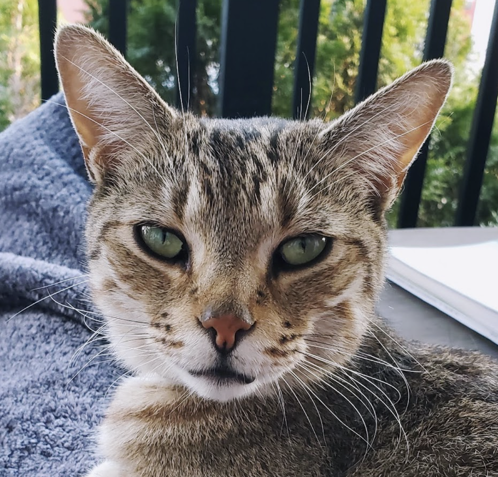

Meow, my name is Zapad.

I live near the top of Prospect Hill in Somerville MA, and enjoy frequent explorations around the neighborhood. I live with my lords, who love me dearly but understand my need to roam free. They’ve installed a smart cat door for me that reads my microchip such that I can travel at will.
I am very competent, so it’s unlikely that I am lost. Rain and snow do not bother me. My premium pelt provides powerful protection from the elements. If you’re reading this, it’s likely I’ve introduced myself to you. I enjoy good company and making friends in the neighborhood.
Do Not Feed
I’m often able to manipulate strangers into feeding me. Please do not! If I begin receiving unauthorized feedings, I will lose my outdoor privileges. I am on a special medical diet. And overfeeding brings out the worst behavior in me. Natural meals are okay if they are caught by claw although hopefully I do not eat any poison rodents. From time to time, I’ve been known to eat trash, a bad habit I picked up while growing up on the streets of Western Philadelphia.
Do Not Capture
Please don’t trap me in enclosed areas. And absolutely do not transport me by car without permission from my owners. If I am clearly and severely injured, please contact my owners and if you cannot get in touch, bring me to the address on my collar.
Technology
I am equipped with an Apple AirTag on my collar which allows my owners to see my location. Do not take my collar off. If you find my collar but I’m not there, please contact my owners.
Contact
Please text or call the phone number on the collar. Or email meow@zapad.xyz. If coming to the address on the collar, please knock on any window on the ground floor or come to the back door.